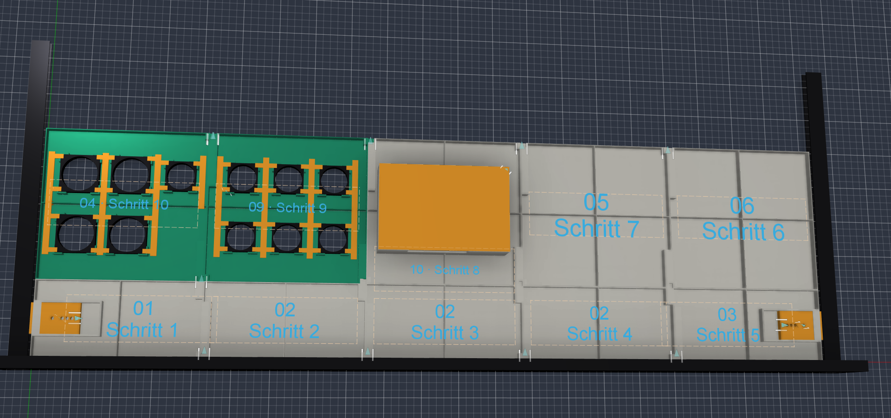
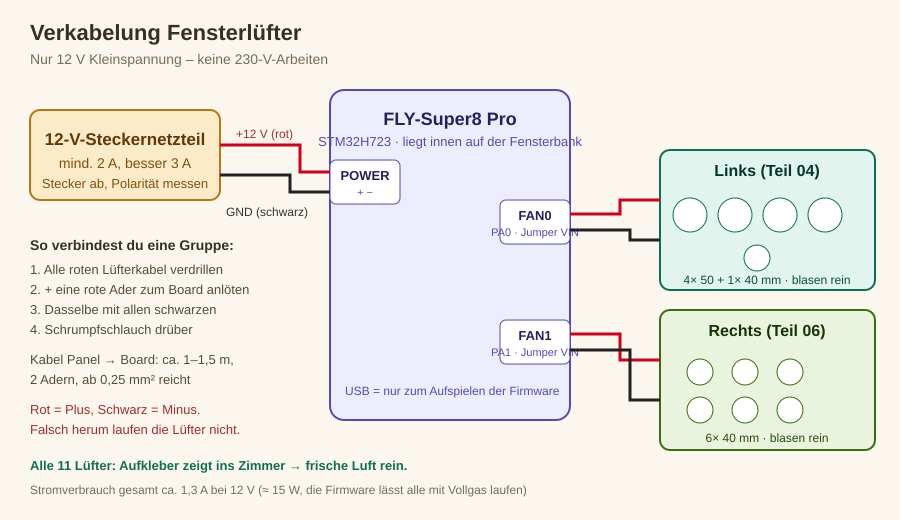
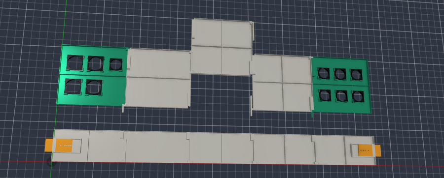
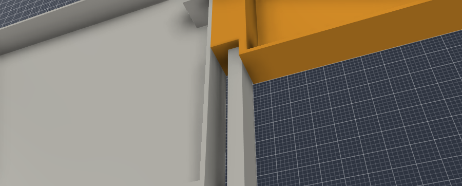
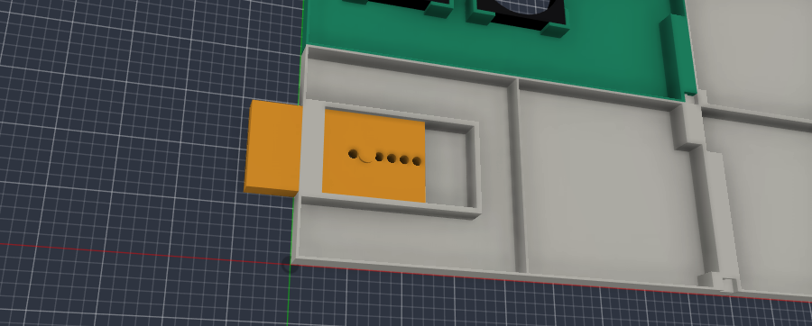
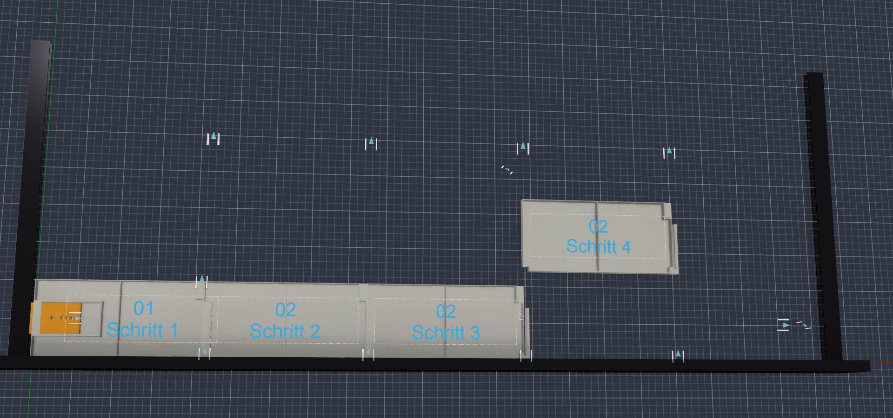
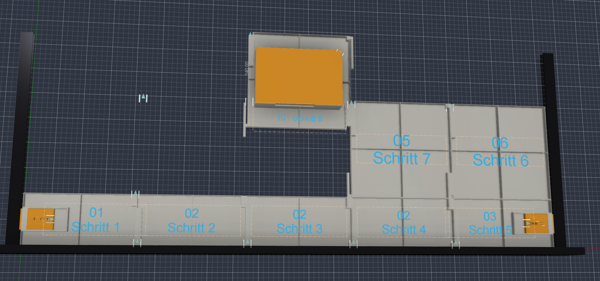
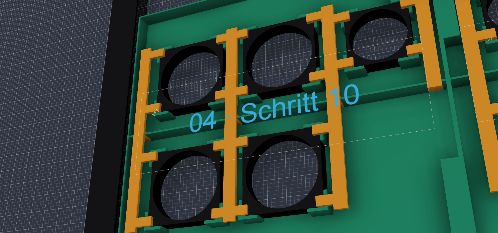
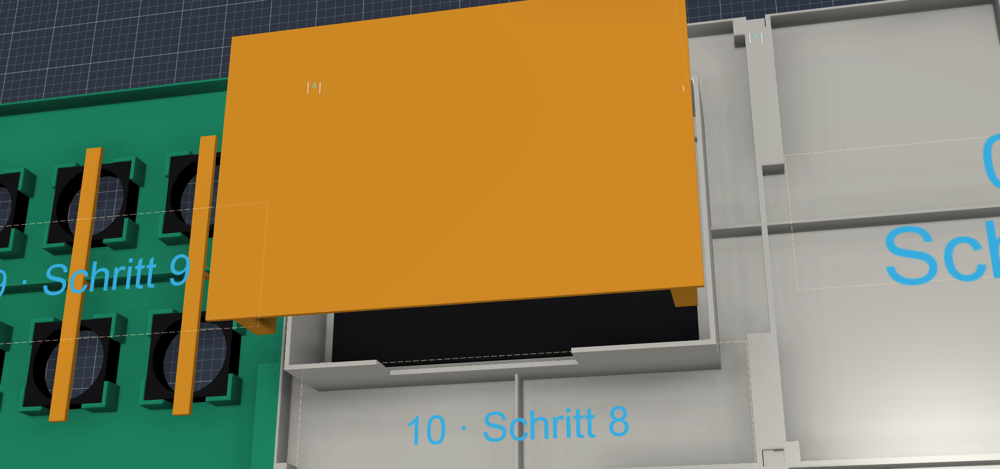
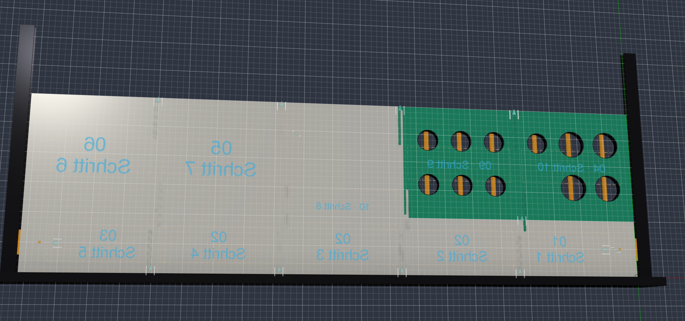

Fensterlüfter – Version A3
Platte für die Rolladen-Schienen · 106 × 30 cm · 1,2 cm tief · 11 Lüfter blasen frische Luft rein · FLY-Super8 Pro
Kein Kleber, keine Schrauben: Alles wird von oben zusammengeschoben.

Alt_mit_Lamellen.1 · Deine Maße (so ist das Modell gebaut)
Breite
Innen von Schienen-Grund zu Schienen-Grund: 111 cm. Bei 2,2 cm Schienen-Tiefe bleiben zwischen den Öffnungen 106,6 cm. Die Platte ist 106,0 cm breit, das sind 3 mm Luft pro Seite.Schlitz
Die Schiene ist 1,1 cm breit und 2,2 cm tief. Die Riegel sind 9 mm dick und fahren normal 2,2 cm raus, also 1,9 cm tief in die Schiene.Platz hinten
Hinter dem Rolladen ist genug Platz. Die Platte ist nur 1,2 cm tief und ragt höchstens 1–2 mm hinter die Schiene.Die Riegel haben 6 Raststellungen (alle 6 mm). So passt die Platte auch noch, wenn ein Maß ein paar Millimeter abweicht.
2 · Drucken (Bambu Lab P2S)
Alle Teile passen aufs Druckbett (größtes Teil: 228 × 220 mm, das Bett hat 256 × 256 mm). Die STL-Dateien liegen schon richtig herum: Außenseite mit den Löchern nach unten. Einfach in Bambu Studio laden, nicht drehen.
Einstellungen
- Material: PETG (einfach zu drucken). Noch besser draußen ist ASA (UV-fest). Dein P2S ist geschlossen, also geht ASA auch. Bei ASA einen Rand (Brim) von 5 mm einstellen.
- Schicht: 0,2 mm · Wände: 2 · Füllung: 10 % Gyroid
- Stützen: keine. Die Haken haben gerade Wände, oben drüber sind nur kurze Brücken.
- Platte: Textured PEI, dann wird die Außenseite schön matt.
8 Druckplatten
Nur_Eckhalter_Teil04.3mf. Platten 2–4 sind die Sockel wie oben.Fensterluefter_alle_Platten.3mf in Bambu Studio öffnen. Da sind alle 8 Platten schon belegt (P2S, PETG, Textured PEI, 2 Wände, 10 %). Gesliced mit Generic PETG: die 10 Platten zusammen ca. 16,6 h und 624 g (ohne das schon gedruckte Teil 04).3 · Lüfter einsetzen und verkabeln
- Alle 11 Lüfter (Teil 04 und 06) so einsetzen, dass der Aufkleber ins Zimmer zeigt. Der kleine Pfeil am Rahmen zeigt dann auch ins Zimmer. So blasen alle die frische Luft rein.
- Die Lüfter einfach in die vier Eck-Halter drücken. Sitzt einer locker, klemm einen Streifen Papier dazu.
- Pro Lüfterteil alle roten Kabel zusammen an eine rote Ader löten, alle schwarzen an eine schwarze, Schrumpfschlauch drüber.
- Die zwei Kabel (je ca. 1–1,5 m) einfach über den Rand der Platte ins Zimmer zum Board führen.

Am FLY-Board
- Netzteil an den Strom-Eingang POWER (Board/Lüfter). Die Treiber-Eingänge bleiben leer.
- Plus/Minus vorher mit dem Multimeter messen, siehe Schaltplan.
- Jeder Lüfter bekommt seinen eigenen Anschluss, nichts abschneiden: Teil 04 (4 große + 1 kleiner) an FAN0–FAN4, Teil 09 (6 kleine) an FAN5–FAN9. Weil es nur 10 Anschlüsse gibt, teilen sich zwei kleine Lüfter FAN9.
- Die MOSFET-Module (5 kleine Steckplatinen zwischen den FAN-Steckern) müssen stecken, sonst bekommen die Lüfter keinen Strom.
- Rot an +, schwarz an −. Bei einem 24-V-Netzteil (LRS-…-24) alle benutzten FAN-Jumper auf 12V, nicht auf VIN, und vor dem Anstecken nachmessen.
- Die Spannungs-Jumper von FAN0 und FAN1 auf VIN stecken. Weil das Netzteil 12 V hat, bekommen die Lüfter dann genau 12 V.
- Das Board kommt ins Board-Fach von Teil 10: auf die 4 Eck-Stützen legen, Kabel unten durch den Schlitz führen (dort läuft kein Wasser rein), Deckel aufdrücken. Die Säulen im Deckel drücken das Board fest. Das Fach ist innen 172 × 112 mm. Das Board muss da reinpassen, also kurz nachmessen.
- Das LRS (230 V) bleibt im Zimmer, nicht ins Fach. Nur die zwei 24-V-Kabel gehen zum Board.
- Das Fach steht ca. 3 cm weiter zum Fenster hin als die Platte. Prüfe, ob dort zwischen Platte und Fensterrahmen Platz ist.
- Die Lüfterkabel von Teil 04 sind vielleicht zu kurz bis zur Mitte. Dann einfache Lüfter-Verlängerungskabel nehmen, nichts abschneiden.
4 · Firmware aufspielen
Die fertige Datei ist Firmware\fensterluefter.hex. Du musst nichts kompilieren.
- Board stromlos machen. Die DFU-Jumper stecken, wie auf der Mellow-Seite im Bild gezeigt.
- USB-Kabel vom Board an den PC.
- STM32CubeProgrammer öffnen (ist schon installiert). Rechts USB wählen und auf Connect klicken.
- Links auf + / Open file klicken,
fensterluefter.hexwählen und auf Download klicken. - USB abziehen, Jumper wieder entfernen, 12 V einstecken. Die Lüfter laufen jetzt mit Vollgas (100 %), damit so viel Luft wie möglich reinkommt.
Geschwindigkeit ändern
Die Firmware schaltet alle 10 Anschlüsse FAN0–FAN9 dauerhaft mit Vollgas ein. Ist es dir später zu laut, sag Bescheid, dann baue ich eine Regelung ein.5 · Zusammenschieben







In Fusion ausprobieren
Fensterluefter_A.f3d öffnen. Jedes Teil ist ein eigenes Bauteil mit Nummer und Schritt. Teil mit der Maus anklicken und nach oben ziehen: Es kann nur hoch und runter, genau wie in echt. Die gelben Riegel gehen nur rein und raus, die Stifte nur hoch. Strg+Z macht die letzte Bewegung rückgängig.
6 · Ins Fenster einbauen
- 1Rolladen ganz hochziehen, Fenster ganz öffnen.
- 2Sockel links (01) unten in die Schienen-Ebene stellen, dort, wo sonst der Rolladen aufliegt. Gelben Riegel mit dem Finger am hinteren Ende in die linke Schiene schieben, bis er fast am Grund ist. Dann den Stift durch das Loch im Riegel stecken, das über dem Loch im Boden liegt, bis er unten einrastet. Wenn keins genau passt, den Riegel 1–2 mm zurückziehen.
- 3Die drei Sockel Mitte (02) nacheinander von oben rechts daneben einschieben, bis sie unten aufsitzen.
- 4Sockel rechts (03) einschieben, Riegel genauso in die rechte Schiene schieben und mit dem Stift sichern.
- 5Jetzt die Lüfterreihe von rechts: Blindteil rechts (06) von oben auf den rechten Sockel schieben, dann Blindteil (05), dann Boardteil (10), dann Lüfterteil 6×40 (09), zum Schluss das Lüfterteil links (04). Vorher die Lüfter einsetzen und die Eckhalter (12 für Teil 04, 13 für Teil 09) von oben auf den Mittelsteg drücken, zwischen die Lüfter.
- 6Rolladen langsam runterlassen, bis er oben auf der Platte aufliegt. Jetzt kann nichts mehr nach oben rausrutschen.
- 7Kabel ins Zimmer zum Board führen, Netzteil einstecken.
Ausbauen: alles umgekehrt. Rolladen hoch, Lüfterreihe von links nach rechts abziehen, Stifte raus, Riegel zurückschieben, Sockel von rechts nach links herausheben.

7 · Testen
- Luftrichtung: Ein Papiertaschentuch innen vor jedes Lüfterteil halten. Es muss bei allen Lüftern ins Zimmer flattern. Wird es angesaugt, ist der Lüfter falsch herum drin.
- Strom: Mit dem Multimeter in der 12-V-Leitung messen. Bei Vollgas ca. 1,3 A.
- PWM: Bei 100 % ist der Ausgang einfach dauernd an. Willst du die 25 kHz auf dem Oszi sehen, stell kurz einen Wert unter 100 ein.
- Lautstärke: Mit einer dB-App am Schreibtisch und am Bett messen. Für die Nacht die Prozent-Werte runtersetzen.
8 · Gut zu wissen
- Alte Luft muss raus können: Die frische Luft drückt die alte automatisch raus, zum Beispiel durch den Spalt unter der Tür. Ist die Zimmertür zu und dicht, kommt weniger rein. Dann die Tür einen Spalt offen lassen.
- Regen: Ohne Lamellen kann Regen durch die Löcher kommen, und die Lüfter blasen ihn rein. Lüfter sind nicht wasserdicht. Bei Regen ausschalten und das Board nicht direkt unter das Fenster legen.
- Winter: Oberhalb der Platte ist nur der Rolladen, und durch seine Ritzen zieht etwas kalte Luft. Wird es zu kalt, kann man später eine Styrodur-Platte (ca. 5 €) oben in den Rahmen klemmen.
- Sicherheit: Der Rolladen lässt sich von außen hochschieben, und das Fenster dahinter ist offen. Im Erdgeschoss den Lüfter nur laufen lassen, wenn du da bist.